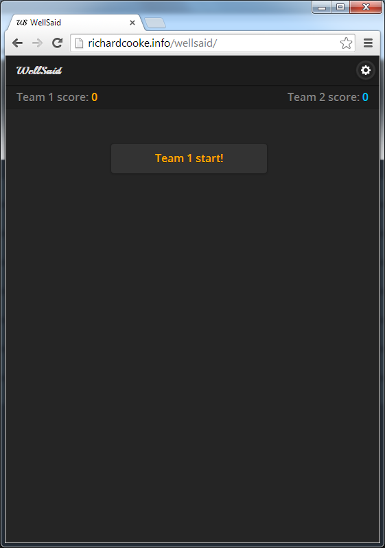
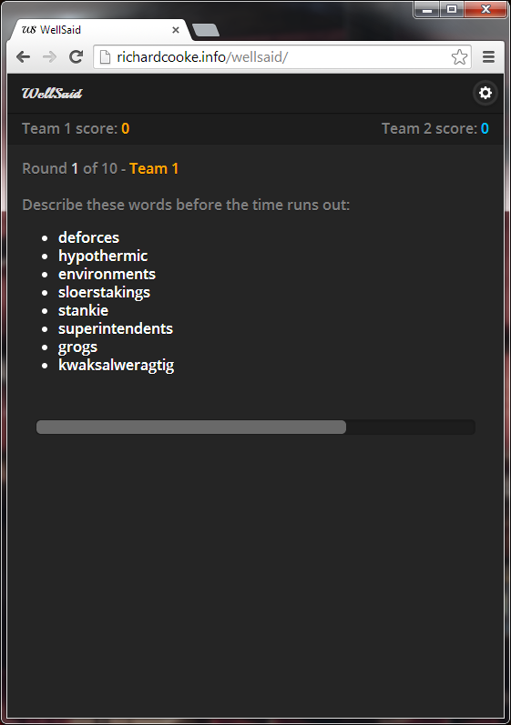
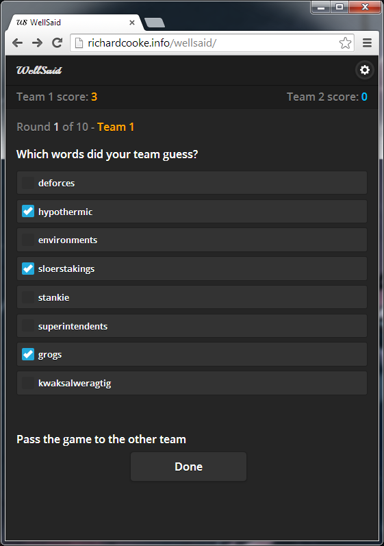
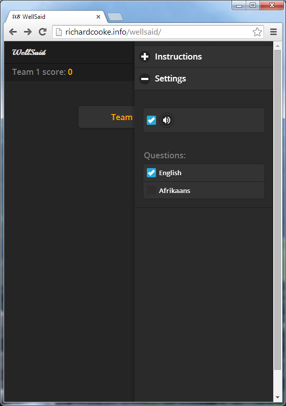

I created a web clone of the popular board game 30 Seconds. It's available to play here: https://wellsaid.richardcooke.info.
Below are some screenshots.
The start screen, with settings accessible at the top right: 
The main game screen, where the reader has to give clues for the rest of his team before the timer at the bottom expires: 
The score screen, where the team enters which words they guessed: 
The settings screen, where you can choose your language: 
The application switches between four different views:
Normally, single page apps load each view using an AJAX web call. This is how JQuery mobile loads a page when you click on a link, and how Ember.js, Angular,js, and Backbone.js are designed to work.
No server calls are made once the site has loaded initially; everything is done in Javascript. I wanted to make an app that didn't need an Internet connection and could run offline on phones.
So instead of links WellSaid uses buttons that when clicked load the next view into the main panel using this method:
me.loadContent = function(view)
{
view.preRender();
$('.divContent').hide();
$('.divContent')[0].innerHTML = view.content();
$('.divContent').trigger('create');
$('.divContent').show();
view.postRender();
$('.divContent').trigger('create');
ko.applyBindings(WellSaid.Model, $('#subContent')[0]);
}Trigger() is used to refresh the JQuery Mobile UI components. Otherwise they would remain plain HTML once the new view loads.
The site uses only a couple of libraries
Each dictionary of questions, as well as each view, is stored in a separate Javascript file. Each of the project Javascript files can access the others through their shared namespace.
<script src="lib/jquery.min.js"></script>
<script src="lib/jquery.mobile.min.js"></script>
<script src="lib/json2.min.js"></script>
<script src="lib/knockout.min.js"></script>
<script src="js/data/wellsaid.english.js"></script>
<script src="js/data/wellsaid.afrikaans.js"></script>
<script src="js/models/wellsaid.model.js"></script>
<script src="js/views/wellsaid.answer.js"></script>
<script src="js/views/wellsaid.ask.js"></script>
<script src="js/views/wellsaid.end.js"></script>
<script src="js/views/wellsaid.start.js"></script>
<script src="js/wellsaid.main.js"></script>Each game variable is a knockout object, like so:
if (typeof WellSaid == "undefined" || !WellSaid)
{
var WellSaid = {};
}
WellSaid.Model = (function ()
{
var me = {};
me.soundOn = true;
me.round = ko.observable(1);
me.isTurnOfTeam1 = ko.observable(true);
me.team1Score = ko.observable(0);
me.team2Score = ko.observable(0);
me.numberOfQuestions = ko.observable(8);
me.numberOfRounds = ko.observable(10);
me.roundLengthInMilliseconds = ko.observable(30000);
me.allQuestions = WellSaid.DataEnglish;
me.lastRoundQuestions = [];
me.usedQuestionIndexes = [];
me.timeElapsedInMilliseconds = 0;
me.timerIntervalInMilliseconds = 100;
me.turnOfTeam = ko.computed(
function() {
return me.isTurnOfTeam1() == 1 ? 1 : 2;
}
, this
);
return me;
}());The HTML is setup to use the variables like this:
Round
<span class="round" data-bind="text: round"></span>
of
<span data-bind="text: numberOfRounds"></span>And finally the variables are initialised like this:
ko.applyBindings(WellSaid.Model, $('#subContent')[0]);The aim of this game was to be usable as an offline web site on phones, so people could use it as a board game at dinner parties.
To avoid the cost of constantly using an Internet connection I tried to make it work offline. Sadly at the time of writing this is impossible. Phones automatically try to reload pages, even if you configure the .htaccess and offline.manifest files as described in many HTML5 tutorials.
And sites cannot be automatically be added as icons on the phone desktop - it takes a lot of user effort to do that.
So, as such, I consider this site a failure as a board game. For it to work properly it would have to be written as a mobile app. I might try to convert it to Phonegap or Android at a later stage.